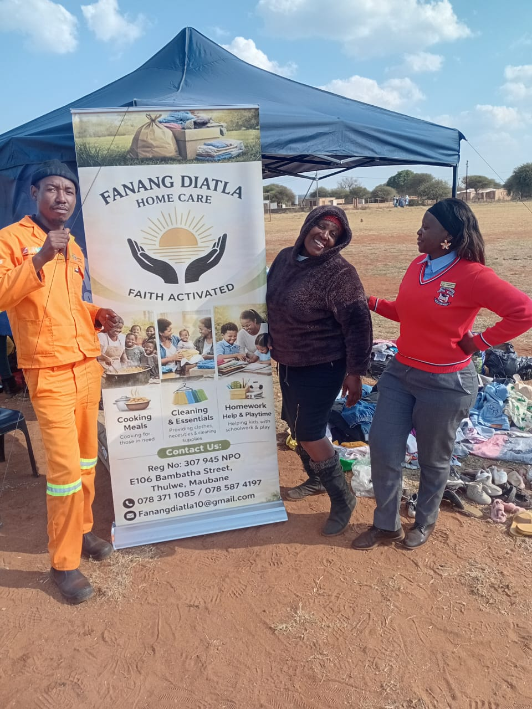
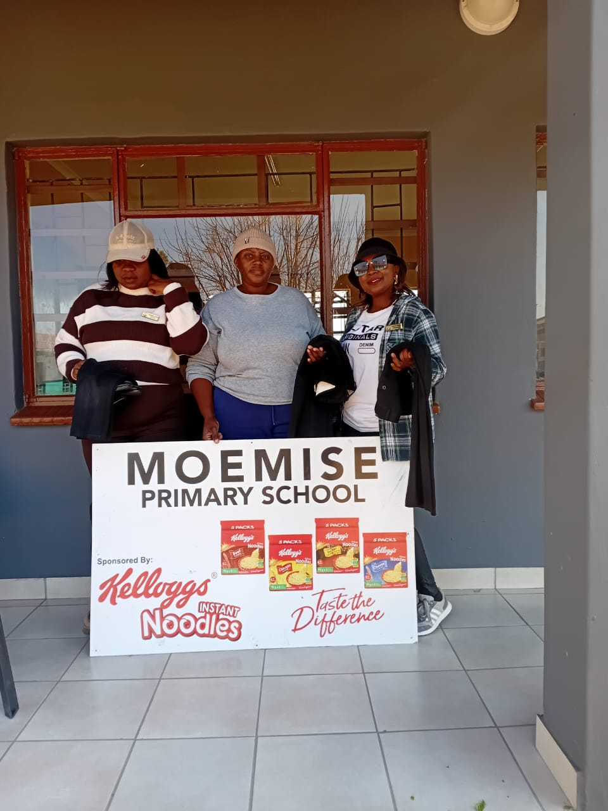
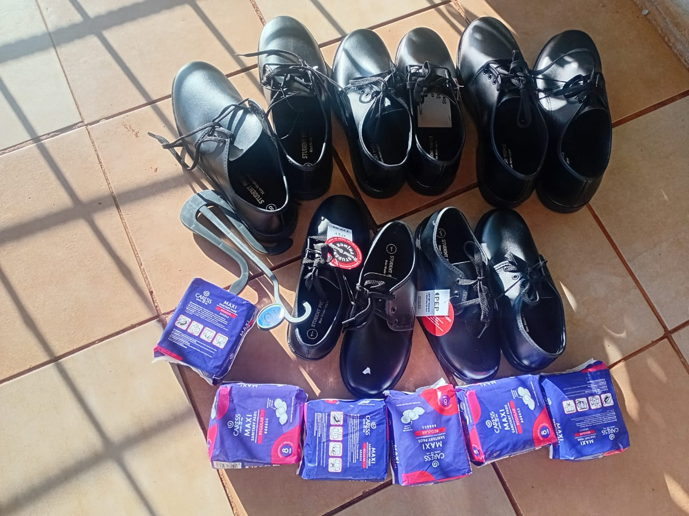
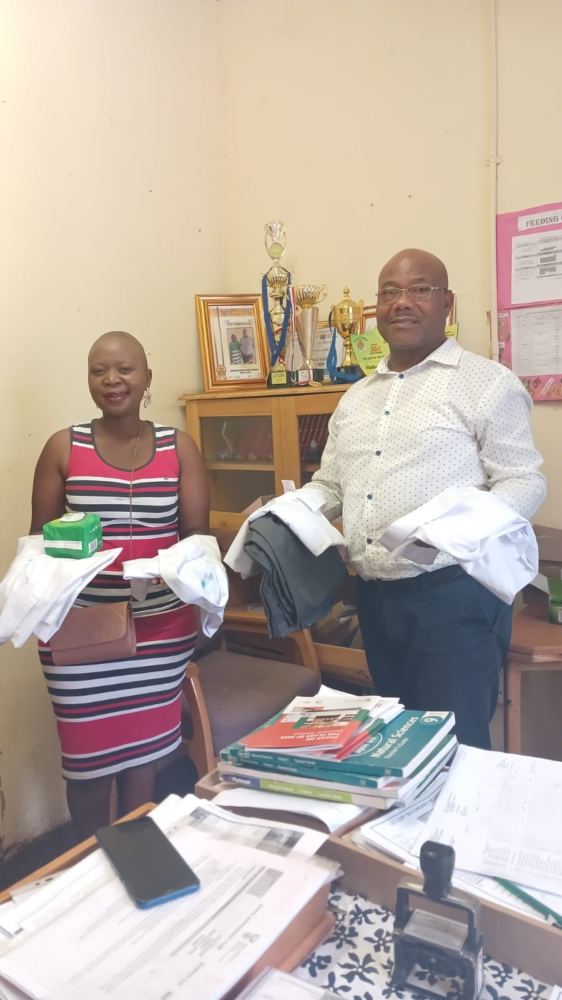

FAITH ACTIVATED- Supporting Vulnerable Communities inRural South Africa
Donate Now Volunteer With UsFANANG DIATLA HOME CARE CENTER is a regstered NPO 307 945 based in Moretele Local Municipality, North West Provice. We are 11 dedicated memebers committed to providing essential to those in need. our work is rooted in faith and community, because we believe every person deserves dignity, education, and support.
We collect and distribute gently use clothing shoes and accessories to individuals and families who cannot afford basic necessites
We provide school uniforms, stationey , school shoes, and literacy programs to help children break the cycle of proverty.
We prepare and deliver nutritious meals to children and families facing food insecurity.
We support children with homework, playtime provide cleaning essentials and sanitary pads to girls in school.




click arrows<> or dots below, or swipe on phone!
You can make a diffeence today. Whether you donate clothes, time or funds , you help us reach more families in Maubane and Thulwe.
Donate Clothes Donate Funds Become a VolunteerPhone:078 371 1085/ 078 587 4197
Emails:Fanangdiatla10@gmail.com
Address:E106 Bambatha Street, Thulwe, Maubane, North West